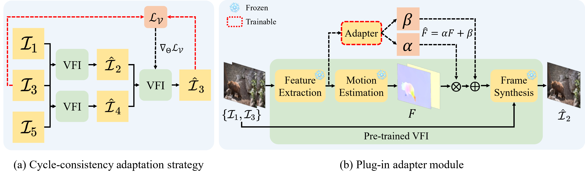
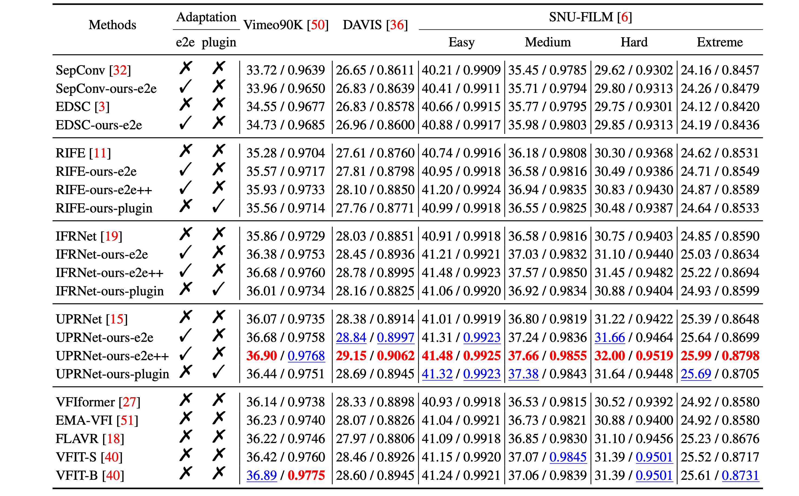
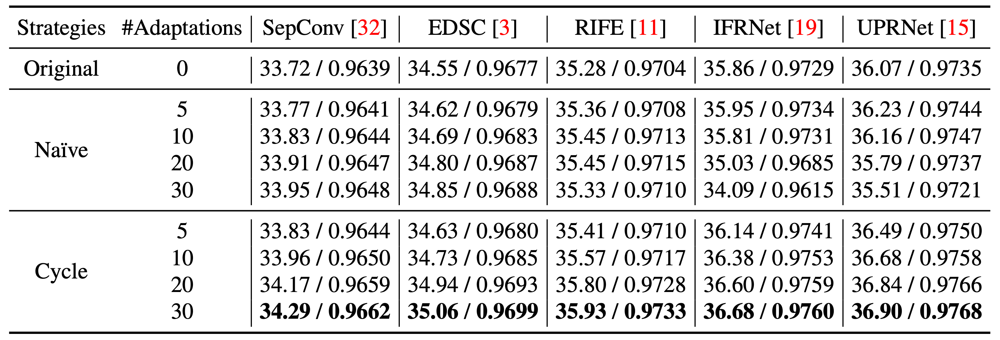

|
|
|
|
|
|
|
|
1CMIC, Shanghai Jiao Tong University |
|
|
|
|
Code [GitHub] |
Paper [arXiv] |
Cite [BibTeX] |


Quantitative Results

Quantitative (PSNR/SSIM) comparison. We compare our boosted models to representative state-of-the-art methods on Vimeo90K, DAVIS and SNU-FILM benchmarks. Both of the optimisation approaches exhibit a substantial improvement in performance. Note that FLAVR and VFIT take multiple frames as input, but our boosted models can still outperform them. RED: best performance, BLUE: second best performance.
Qualitative Results

Qualitative comparison against the state-of-the-art VFI algorithms. We show visualization on Vimeo90K, SNU-FILM and DAVIS benchmarks for comparison. The patches for careful comparison are marked with red in the original images. Our boosted models can generate higher-quality results with clearer structures and fewer distortions.

Quantitative (PSNR/SSIM) comparison of adaptation strategies. The experiments on Vimeo90K dataset have shown that cycle-consistency adaptation steadily boosts VFI models by fully leveraging the inter-frame consistency to learn motion characteristics within the test sequence.
Ablation Study on end-to-end and plug-in adapter adaptation. Models boosted by our proposed plug-in adapter require minimal finetuning parameters for adaptation, resulting in a 2 times improvement in efficiency while maintaining comparable inference efficiency and performance.

Motion field visualization. The VFI model boosted by our proposed motion adaptation can estimate more precise motion fields, thereby producing synthesized frames with higher quality.

More visualizations on Vimeo90K benchmark. The patches for careful comparison are marked with red in the original images.

More visualizations on DAVIS benchmark. The patches for careful comparison are marked with red in the original images.

More visualizations on SNU-FILM benchmark. The patches for careful comparison are marked with red in the original images.
Based on a template by Phillip Isola and Richard Zhang.